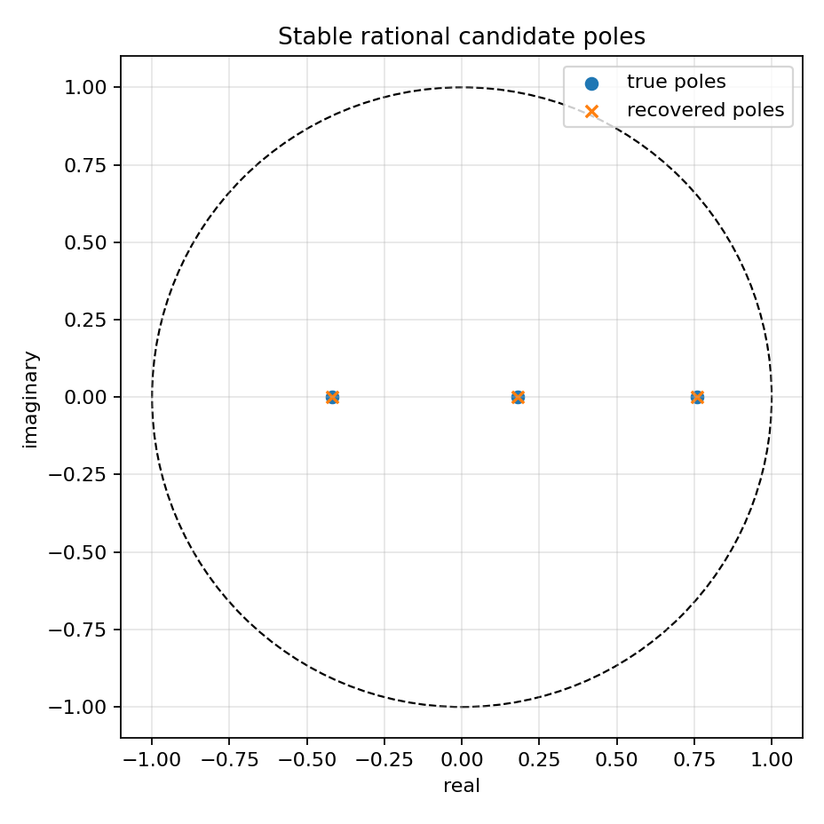
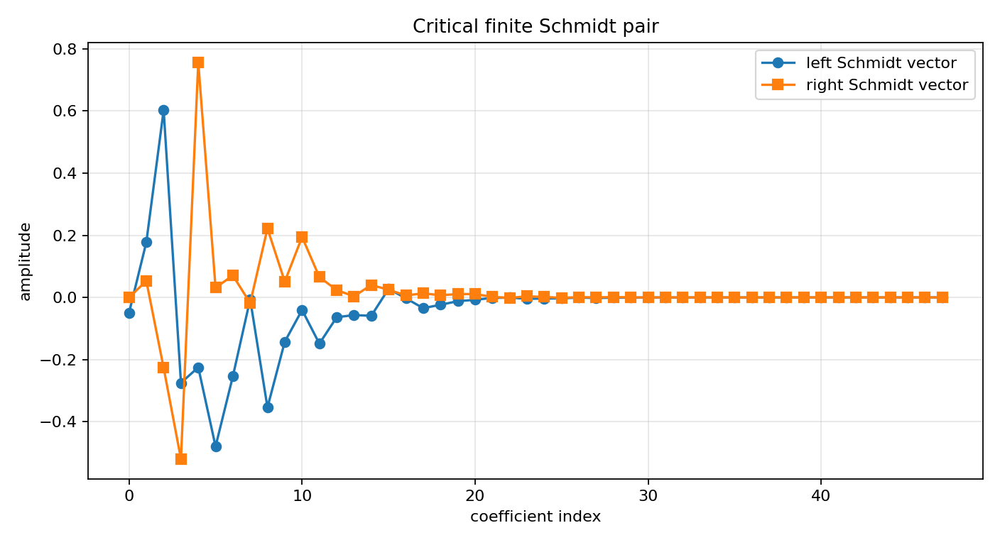
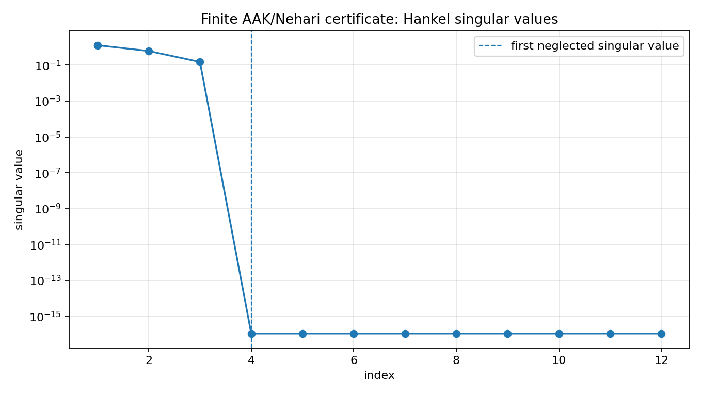
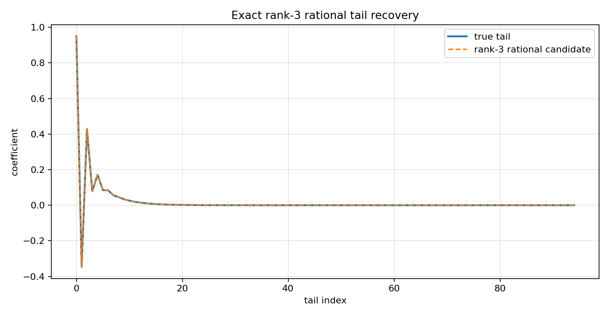

Finite-section SISO AAK/Nehari certificate¶
Tutorial goal
Use Schmidt-pair identities to certify the finite AAK/Nehari target and attach the rational candidate.
Note
New to the terminology? See the lattice DSP concept map and the causality/data-use guide for how online, offline, block, and MIMO examples should be read.
Context¶
This is the first tutorial whose structure is deliberately AAK/Nehari-shaped. It builds a finite Hankel matrix from an exact rational anticausal tail, computes the first neglected Schmidt pair, checks the singular-vector identities, and attaches the finite Nehari/rational candidate for the same rank.
The tutorial is intentionally finite-section. It is closer to the AAK/Nehari construction than the earlier rank sweeps because it verifies the Schmidt-pair equations directly, but it is still not advertised as a full infinite-dimensional Hardy-space solver.
Key idea and equations¶
For target rank r, the finite certificate reports the first neglected singular value
It also checks the finite Schmidt-pair equations
On an exact rank-three rational tail, the rank-three certificate should recover the stable poles and produce residuals near machine precision.
How to read the result¶
Look for small Schmidt-pair residuals, rank-3 pole recovery, tiny rational error, and poles inside the unit disk.
Run command¶
python examples/aak_siso_certificate_demo.py
Run status¶
Return code: 0
Captured stdout¶
finite Hankel matrix: 48 x 48
target rank: 3
true poles: [-0.42, 0.18, 0.76]
true weights: [1.25, -0.7, 0.4]
leading singular values: [1.28016936, 0.61060229, 0.14951434, 0.0, 0.0, 0.0, 0.0, 0.0]
sigma_next: 1.123664e-16
rank-r SVD error: 6.575994e-16
left Schmidt residual: 1.335e-16
right Schmidt residual: 1.279e-16
candidate tail error: 4.624e-15
candidate rational error: 4.613e-15
candidate pole radius: 0.7600
candidate accepted: True
recovered poles: [-0.42, 0.18, 0.76]
Figures¶
{kind=link}

aak_certificate_poles.png¶
{kind=link}

aak_certificate_schmidt_pair.png¶
{kind=link}

aak_certificate_singular_values.png¶
{kind=link}

aak_certificate_tail_recovery.png¶
Generated data files¶
Source code¶
1"""Tutorial: a finite-section SISO AAK/Nehari certificate.
2
3This example is the first deliberately AAK/Nehari-shaped diagnostic in the
4package. It does not merely fit a recurrence. It builds a finite Hankel
5matrix, computes the Schmidt pair associated with the first neglected singular
6value, checks the finite AAK identities, and then attaches the finite
7Nehari/rational candidate for the same rank.
8
9The example uses an exact rank-3 rational tail, so the rank-3 candidate should
10be selected, recover the true poles, and have tiny tail/rational error. This is
11still a finite-section prototype, not a full infinite-dimensional Hardy-space
12AAK/Nehari solver.
13"""
14
15from __future__ import annotations
16
17import csv
18import os
19from pathlib import Path
20
21import numpy as np
22
23import lattice_dsp as ld
24
25
26def artifact_dir() -> Path:
27 path = Path(os.environ.get("LATTICE_DSP_ARTIFACT_DIR", "reports/example-artifacts"))
28 path.mkdir(parents=True, exist_ok=True)
29 return path
30
31
32def exact_rational_tail(n_terms: int) -> tuple[np.ndarray, np.ndarray, np.ndarray]:
33 true_poles = np.array([-0.42, 0.18, 0.76], dtype=float)
34 true_weights = np.array([1.25, -0.7, 0.4], dtype=float)
35 n = np.arange(n_terms, dtype=float)
36 tail = sum(weight * pole**n for weight, pole in zip(true_weights, true_poles, strict=True))
37 return np.asarray(tail, dtype=float), true_poles, true_weights
38
39
40def write_summary(path: Path, rows: list[dict[str, object]]) -> None:
41 with path.open("w", newline="", encoding="utf-8") as f:
42 writer = csv.DictWriter(f, fieldnames=list(rows[0]))
43 writer.writeheader()
44 writer.writerows(rows)
45
46
47def main() -> None:
48 out_dir = artifact_dir()
49 rows = cols = 48
50 rank = 3
51 tail, true_poles, true_weights = exact_rational_tail(rows + cols - 1)
52 criteria = ld.FiniteNehariCandidateCriteria(
53 max_tail_error=1e-8,
54 max_rational_error=1e-8,
55 max_pole_radius=0.99,
56 )
57
58 certificate = ld.finite_aak_siso_certificate(tail, rank=rank, rows=rows, cols=cols, criteria=criteria)
59 candidate = certificate["candidate"]
60 selected_poles = np.asarray(candidate["poles"])
61
62 summary = [
63 {
64 "rank": certificate["rank"],
65 "sigma_next": certificate["sigma_next"],
66 "rank_svd_error": certificate["rank_svd_error"],
67 "schmidt_left_residual": certificate["schmidt_left_residual"],
68 "schmidt_right_residual": certificate["schmidt_right_residual"],
69 "hankelized_tail_error": candidate["hankelized_tail_error"],
70 "rational_error": candidate["rational_error"],
71 "max_pole_radius": candidate["max_pole_radius"],
72 "accepted": candidate["accepted"],
73 }
74 ]
75 summary_path = out_dir / "aak_siso_certificate_summary.csv"
76 write_summary(summary_path, summary)
77
78 print("finite Hankel matrix:", f"{rows} x {cols}")
79 print("target rank:", rank)
80 print("true poles:", np.round(true_poles, 8).tolist())
81 print("true weights:", np.round(true_weights, 8).tolist())
82 print("leading singular values:", np.round(certificate["hankel_singular_values"][:8], 8).tolist())
83 print("sigma_next:", f"{certificate['sigma_next']:.6e}")
84 print("rank-r SVD error:", f"{certificate['rank_svd_error']:.6e}")
85 print("left Schmidt residual:", f"{certificate['schmidt_left_residual']:.3e}")
86 print("right Schmidt residual:", f"{certificate['schmidt_right_residual']:.3e}")
87 print("candidate tail error:", f"{candidate['hankelized_tail_error']:.3e}")
88 print("candidate rational error:", f"{candidate['rational_error']:.3e}")
89 print("candidate pole radius:", f"{candidate['max_pole_radius']:.4f}")
90 print("candidate accepted:", candidate["accepted"])
91 print("recovered poles:", np.round(np.sort(np.real(selected_poles)), 8).tolist())
92 print(f"wrote {summary_path}")
93
94 try:
95 import matplotlib.pyplot as plt
96 except Exception:
97 print("matplotlib is not installed; skipped figures")
98 return
99
100 singular_values = np.asarray(certificate["hankel_singular_values"], dtype=float)
101 fig, ax = plt.subplots(figsize=(8.5, 4.8))
102 ax.semilogy(np.arange(1, 13), singular_values[:12], marker="o")
103 ax.axvline(rank + 1, linestyle="--", linewidth=1.0, label="first neglected singular value")
104 ax.set_title("Finite AAK/Nehari certificate: Hankel singular values")
105 ax.set_xlabel("index")
106 ax.set_ylabel("singular value")
107 ax.grid(True, alpha=0.3)
108 ax.legend()
109 fig.tight_layout()
110 path = out_dir / "aak_certificate_singular_values.png"
111 fig.savefig(path, dpi=160)
112 print(f"wrote {path}")
113
114 fig2, ax2 = plt.subplots(figsize=(8.8, 4.8))
115 ax2.plot(certificate["left_schmidt_vector"], marker="o", label="left Schmidt vector")
116 ax2.plot(certificate["right_schmidt_vector"], marker="s", label="right Schmidt vector")
117 ax2.set_title("Critical finite Schmidt pair")
118 ax2.set_xlabel("coefficient index")
119 ax2.set_ylabel("amplitude")
120 ax2.grid(True, alpha=0.3)
121 ax2.legend()
122 fig2.tight_layout()
123 path2 = out_dir / "aak_certificate_schmidt_pair.png"
124 fig2.savefig(path2, dpi=160)
125 print(f"wrote {path2}")
126
127 rational_tail = np.asarray(candidate["rational_tail"], dtype=float)
128 fig3, ax3 = plt.subplots(figsize=(9.2, 4.8))
129 n = np.arange(tail.size)
130 ax3.plot(n, tail, label="true tail", linewidth=2.0)
131 ax3.plot(n, rational_tail, "--", label="rank-3 rational candidate")
132 ax3.set_title("Exact rank-3 rational tail recovery")
133 ax3.set_xlabel("tail index")
134 ax3.set_ylabel("coefficient")
135 ax3.grid(True, alpha=0.3)
136 ax3.legend()
137 fig3.tight_layout()
138 path3 = out_dir / "aak_certificate_tail_recovery.png"
139 fig3.savefig(path3, dpi=160)
140 print(f"wrote {path3}")
141
142 fig4, ax4 = plt.subplots(figsize=(5.8, 5.8))
143 circle = plt.Circle((0, 0), 1.0, fill=False, linestyle="--")
144 ax4.add_artist(circle)
145 ax4.scatter(np.real(true_poles), np.imag(true_poles), marker="o", label="true poles")
146 ax4.scatter(np.real(selected_poles), np.imag(selected_poles), marker="x", label="recovered poles")
147 ax4.set_aspect("equal", adjustable="box")
148 ax4.set_xlim(-1.1, 1.1)
149 ax4.set_ylim(-1.1, 1.1)
150 ax4.set_xlabel("real")
151 ax4.set_ylabel("imaginary")
152 ax4.set_title("Stable rational candidate poles")
153 ax4.grid(True, alpha=0.3)
154 ax4.legend()
155 fig4.tight_layout()
156 path4 = out_dir / "aak_certificate_poles.png"
157 fig4.savefig(path4, dpi=160)
158 print(f"wrote {path4}")
159
160
161if __name__ == "__main__":
162 main()